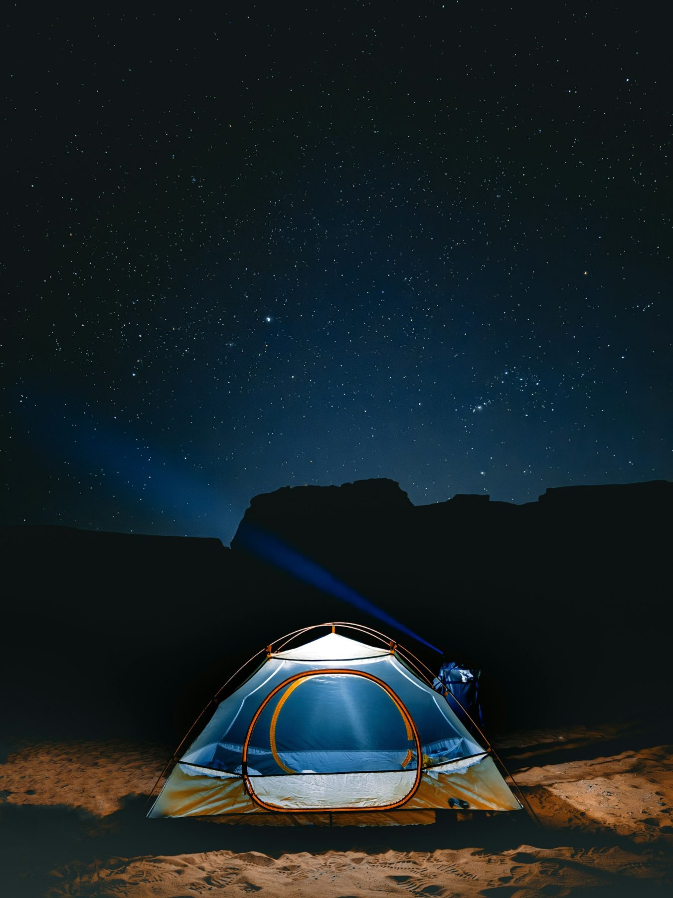

June 7, 2026
Best Light in the Atacama
In the Atacama the light changes the colour of the ground. Where to stand at sunrise and sunset, and when to put the camera away.
Read More
A night in a desert camp is the part of a trip most people remember. The air is dry, the sky is dark, and the only sound is the wind on the tent. A little planning makes that night comfortable.
We plan camp nights away from roads and towns so the sky stays dark. Groups stay small, and the guide sets up camp before the light goes.
Most guests say the first hour after sunset is the best part of the trip. Sit still, let the eyes adjust, and wait.
A desert night asks for warm clothes and patience. Bring both and the sky does the rest.
In the Atacama the light changes the colour of the ground. Where to stand at sunrise and sunset, and when to put the camera away.
Read MoreHut walks are lighter than camping, but the list still matters. What goes in the pack, and what stays at the hotel.
Read More